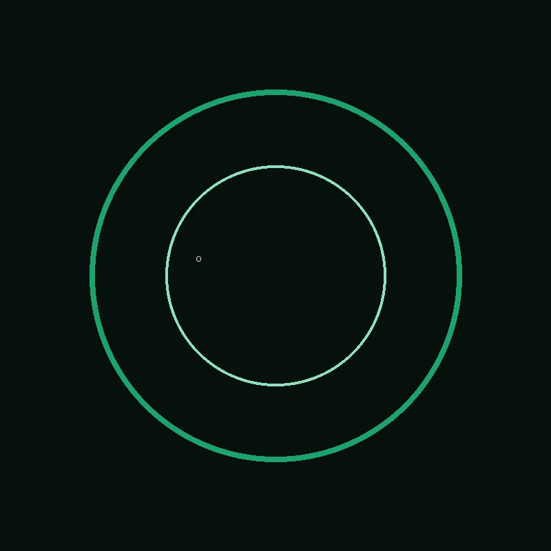

“আমি আমার web development students-কে differently think করতে শেখাই এবং সবসময় user experience-কে priority দিই।”
WEB DEVELOPMENT MENTOR × FULL STACK
আমি Mohammed Obaidul Hoque।
আমি জটিল সমস্যাকে পরিষ্কার, ব্যবহারযোগ্য এবং স্মার্ট web experience-এ রূপ দিই।
01Thinkproblem first
02Buildclean systems
03Refineuser experience
∞

PORTRAITNOT YET LOADED
কিছু খুঁজছেন?
SCROLL ↓
ABOUT / OBSERVATION
মানুষ আগে। প্রযুক্তি পরে।
আমি Web Development Mentor এবং Full Stack Web Developer। আমার কাজ শুধু interface বানানো নয়। একটি সমস্যা কীভাবে মানুষ অনুভব করে, কোথায় আটকে যায়, কোন মুহূর্তে trust তৈরি হয়, তারপর সেই insight-কে কীভাবে বাস্তব software-এ রূপ দেওয়া যায়, সেটিই আমার আগ্রহ।
LABObaid's Laboratory
FOCUSUX + Engineering
APPROACHThink → Build → Refine
EMAILobaidulhoquectg@outlook.com
PROJECTS / UNDER CONSTRUCTION
যেসব system আমি বানিয়েছি, সেগুলো এখানে evidence হিসেবে আছে।
Search করুন, filter করুন, explore করুন। প্রতিটি card build-time generated.
এই filter-এ কিছু পাওয়া যায়নি। সিস্টেমটি অন্তত মিথ্যা project বানাচ্ছে না।
BLOG / SIGNAL BROADCAST
চিন্তা থেকে system। system থেকে lesson।
Search ও tag filter দিয়ে লেখা খুঁজে নিন।
এখানে matching article নেই।
CONTACT / CONNECTION
একটা ভালো problem থাকলে, কথাটা শুরু করা যাক।
প্রয়োজনীয় contact detail-গুলো config থেকে আসে। যা যোগ করা নেই, তা interface-এও দেখাবে না। সভ্যতা আপাতত এতটুকু automated.
CONNECT
Let’s build something useful.
আপনার problem, idea বা project-এর context পাঠান।
এটাই শেষ নয় · explore · discover · return · learn · build ·
LAB NOTE 07
আপনি যা দেখেছেন, সেটাই সব নয়।
আরও content যোগ হবে নির্দিষ্ট folder-এ। Build system সেটা discover করে index করবে। মানুষের কাজ মানুষের হাতে থাক, repetitive কাজটা automation-এর হাতে যাক।
উপরে ফিরে যান ↑